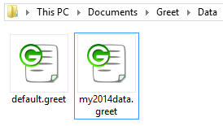
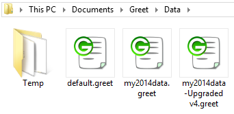

How to update from 2014 to 2015 safely
The structure of the datafile in GREET 2015 has been modified in order to allow more features and flexibility. For example placeholder for infrastructure expansion are there, and most of the parameters have been converted to time series. The vehicles have also been modified heavily in order to allow for more flexibility. |
Step by step guide for updading your existing fileIn this guide, we will assume that your saved your changes in a data file called my2014data.greet, we will update this file to the new format and merge the updates of the 2015 release into it. After installing the new GREET 2015 software, you'll be able to observe the following behavior:
 In this example, after installing GREET 2015, I now have two files in my data folder:
In order to update my older file with all the updates of the 2015 version of the database, I need to load the file in GREET 2015, wait for it to be converted to the newer format, and then update it using the data merging tool. After loading the older file, you may see a "Database Information" message, letting you know that there is an error in the file. This is due to an error we had in the previous version of the datafile. Upon loading a file in GREET 2015, more detailled integrity checks are performed on the database, thus resulting in that message. You can click the "OK" button and ignore it for now, as updating your file will fix that data error.  You can also see that in your data folder you'll have now one more file and folder:
Now that your file is loaded in GREET 2015, you can click on the "Database" menu then click on the item "Check for data updates". The software will query our servers to know if a newer version of the file is available for download.
If it is, it will then offer you to download it, and later to merge the update and your data.
When prompted by the merging tool about merging the update with your file, click "Yes", a new window will show you the files that are opened and the difference detected between the two files.
When you file is merged you'll be able to enjoy the new updates of the database, but at the same time keep your newly added processes and pathway.
|